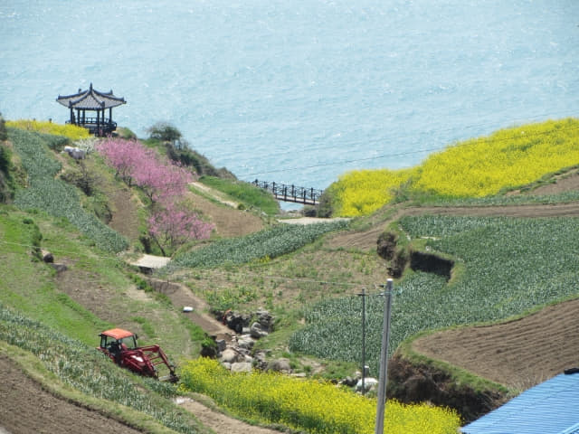

離開懸崖峭壁上、油菜花田畔的優美涼亭, 循我個人認為是南海加川梯田村最美的彎彎曲曲步道一直往上走, 這段步道的風景美得不知如何形容, 簡直就是世外桃源, 來到山坡上, 望望手錶, 剛剛過了早上十時五十分, 估計巴士大約早上十一時十分駛來加川巴士站停靠, 如果錯過了這班次, 下午的跨越四橋三島遠足行程便可以立即宣佈告吹了!
離開前再望望壯麗梯田, 接著收起相機, 看到什麼也不拍攝了, 匆匆穿過村莊, 一直朝巴士站的方向往上走, 來到巴士站下的山坡, 方知道前面是南海加川梯田村最難走的出入口步道, 時間十分緊迫, 也沒選擇了, 唯有小心翼翼的沿崎嶇、破爛、陡斜的步道往上走, 好不容易才來到南面路, 巴士站就在左邊不遠處。再望望手錶, 只是早上十一時五分, 巴士肯定還未駛來, 總算鬆了一口氣。這裡一天只有幾班巴士, 寧可早些來, 一旦錯過一班巴士, 什麼地方也不用去!
剛才在海岸時已經非常「危急」, 但沿途都沒有地方可以解決, 其實這時可以說到達「忍無可忍」的極限, 已有準備在巴士站對面的山坡就地解決, 當看見離巴士站不遠有一個洗手間, 當然第一時間跑去。
放鬆後, 便立即走回加川巴士站等候。巴士站的風景也太美吧!
看見巴士還未駛來, 便在巴士站外再眺望加川梯田村, 剛好可以看到剛才遊覽的涼亭, 從這裡看一樣美。

如果不是走到下面圖中右邊的小路, 便可能不會發現加川梯田村最美的步道, 更可能不會亂碰亂撞下走到海岸, 一切都那麼湊巧! 人生何妨不是如此!
哈哈~~~ 我們剛才便是沿村中這崎嶇、破爛、陡斜的步道往上走來的! 如果是下雨天, 加上濕滑就非常危險了!
加川巴士站旁得意石櫈仔。
加川巴士站對面有一塊石碑, 上面刻了一些韓文, 不知是什麼意思。
等了一會, 約早上十一時十五分, 巴士遲遲還未出現, 這時有一位當地的中年女士走來巴士站, 我們順便問她什麼時候會有巴士來, 怎料她不斷「耍手擰頭」, 好像表示沒有巴士的! 再三追問下, 答案都是一樣!
不是嗎? 沒有巴士? 當場呆了一會。但想一想, 她的意思可能是現在沒有巴士的, 要很遲才有!
不過, 其實我出發前也準備了後備方案: 如果巴士遲來, 趕不及往泗川市, 下午便只往離這裡不遠的美國村遊覽。
等了一會, 那位中年女士更索性在巴士站的長櫈上睡覺! 糟糕啦~~~~ 看來巴士真的沒有那麼快來!
又過了一會, 巴士遲遲沒有出現, 也沒辦法, 唯有繼續等, 看看手錶, 差不多早上十一時三十分, 看來極有可能要更改下午的行情。
按計劃, 我們先從加川巴士站乘巴士往二東面 (이동면 Idong-myeon), 然後轉乘另一輛巴士往海南郡對岸的泗川市．三千浦, 然後展開穿越南海四大橋樑、跨越三島的遠足行程。
但最大問題是, 我們必須在中午12:15前抵達二東面, 搭乘今天唯一的一班巴士往泗川! 錯過了這班巴士便沒有了! 乘計程車? 不可能吧! 太遠了! 太貴了! 寧可改為明天去!
時間一分一秒的過去, 這時才真真正正明白什麼是「熱鍋上的螞蟻」, 想不到本以為週詳的計劃, 就這樣告吹, 當時真的感到既無奈, 又沮喪。
巴士終於約在早上十一時四十分從遠處出現, 緩緩駛來加川巴士站。
這時開始盤算可否趕及在中午12:15前抵達二東面! 但已經來到, 盡管一試吧!
巴士約早上十一時四十分駛來加川巴士站停靠, 滿以為會接著開車, 怎料車長竟然走出車廂休息! Oh! My God! 原來加川巴士站是這巴士路線的總站! 不知會在這停留多久! 也不知是否往二東面? 往看來一切都完了!
熱心車長立即開車 趕往二東面
立即走前問問車長巴士是否往二東面(이동면)? 如果不是往那方向, 根本連美國村也去不到, 那就麻煩了!
「이동면?」車長非常好奇, 接著追問我們去那裡做什麼。也倒是, 二東面應該是一個荒涼的村落, 什麼景點也沒有, 估計車長可能以為我們去錯了地方。
我們遞給地圖給他看, 表示我們在二東面轉乘從南海公用客運站開出往昌善三千浦大橋和泗川市的巴士。
車長點點頭, 明白我們的意思, 但面帶懷疑。接著返回車上, 在車頭上取出一張時間表, 看了一會, 指著12:05從南海公用客運站開出往泗川的時刻給我們看, 我們馬上點頭表示「對! 對! 對!」
車長看看手錶, 這時應該差不多早上十一時四十五分, 用手勢表示「Okay!」, 叫我們快些坐下來, 接著便馬上開車。
我們現在的情況就如下圖所示, 我們必須在二東面趕及搭乘12:05從南海公用客運站開出往泗川的巴士。我們比開出往泗川的巴士早開二十分鐘, 但距離遠了一倍多, 看來好像是不可能的, 但既然車長表示「Okay!」, 就相信他吧! 情節真是有如電影一樣
巴士的速度明顯比平常的快很多, 只希望真的可以趕及往二東面。過了一會, 前面有一輛行駛較慢的汽車, 足足帶領了巴士有五分鐘之久, 嚇壞了我們! 幸好在一個分叉路口過了頭, 接著巴士便全速前進。
不停望著手錶…… 中午十二時, 我們可能在這裡 …….中午十二時五分了, 往泗川的巴士已經從南海公用客運站開出, 競賽時間正式開始了! 我們的巴士剛剛向右拐了一個大彎, 現在應該大概在中間彎位的位置, 距離比泗川的巴士遠了一些, 開始緊張了!
過了一會, 看到左邊的美國村, 接著沒有剛才彎彎曲曲的道路, 而且是下坡道, 加上交通十分暢順, 車速很快, 不久來到一個 T 字路, 在這裡轉左, 馬路寬闊很多, 更加暢通, 應該可以順利抵達二東面, 但問題是: 可否趕及轉乘往泗川的巴士?
二東面 (이동면) 成功轉車往泗川市
巴士於中午十二時十五分抵達二東面, 在一個巴士站對面停下來, 車長笑笑口, 示意就在那裡乘車往泗川市, 並用手勢表示巴士會從左邊駛來, 然後駛往右邊的馬路。看見這樣, 應該可以趕及轉乘往泗川的巴士吧!
非常感激這位熱心車長的幫忙, 否則肯定趕不及來這巴士站!
按車長所示, 往泗川市的巴士會從前面的街道駛來。本以為要取消下午的行程, 現在失而復得, 真是十分開心!
然後從這街道駛往泗川市, 所以剛才車長不斷指著巴士站旁的街口, 叫我們在這裡等。但這裡沒有巴士站, 其實有點擔心的, 如果不是車長指著這裡, 也不敢在這裡等。
千萬不要站在這巴士站等。
巴士約中午十二時二十五分駛來, 連忙揮手, 當巴士停下來, 問問車長是否往泗川市的「연륙교.대방사거리」巴士站, 車長點點頭, 這時才正式鬆了一口氣。登上了車廂, 正式展開下午的行程。


{kind=link}